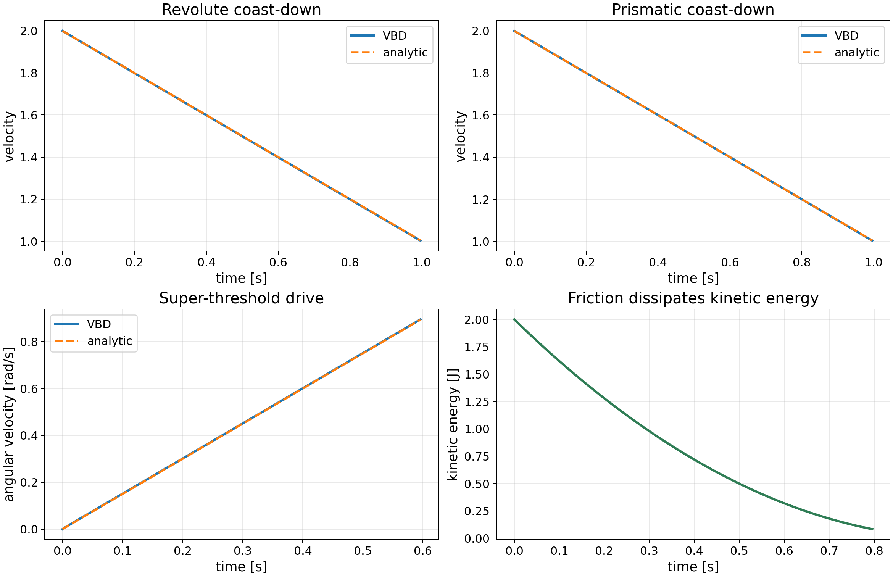

Newton Rendered Video
Validation Plots

Standalone Example
| Feature | Run Command | What To Check |
|---|---|---|
Model.joint_friction |
uv run -m newton.examples basic_joint_friction |
Five pendulums with different friction torques are compared against an RK4 reference. |